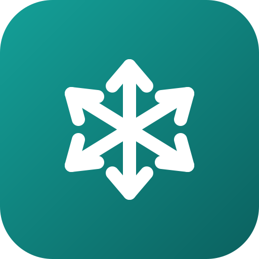

VendeFríoTérminos y privacidad
No es asesoramiento legal. Este texto lo escribimos nosotros, con lo básico de la Ley 25.326 de Protección de Datos Personales y la Ley 24.240 de Defensa del Consumidor, sin la revisión de un abogado. Si tenés dudas sobre tu caso, consultá con un profesional.
1. Qué es este documento
VendeFrío es una app para cargar, preparar, repartir y cobrar pedidos. Estas condiciones explican cómo se usa y qué pasa con los datos que se cargan. Al crear una cuenta o usar la app, aceptás estas condiciones. Hoy la app es gratis.
2. Quién es responsable de qué
- Responsable del servicio: Jeremías Saldaño (CUIT 20-42905080-5). Contacto: vendefrio.app@gmail.com.
- Los datos de la cuenta (tu email, tu nombre y el de tu distribuidora) los cuidamos nosotros.
- Los datos que la distribuidora carga de su trabajo (sus comercios, productos, pedidos y empleados) son de la distribuidora, que es la responsable de tenerlos con permiso. Nosotros los guardamos y los mostramos solo para que la app le funcione, y no los usamos para nada más.
3. Qué datos guarda la app
- De la cuenta: email, nombre de la distribuidora y de cada persona del equipo, y sus roles. Son necesarios para tener cuenta; sin ellos solo se puede usar la app sin cuenta (modo personal).
- Del trabajo: comercios (nombre, dirección, teléfono, ubicación), productos y precios, pedidos, entregas, cobros, saldos, gastos y visitas.
- Lo que manda un comercio cuando pide por su link: su nombre y su pedido.
- Fotos y firmas que se carguen como prueba de entrega, tickets de gastos o fotos de heladeras.
- La ubicación del celular, solo cuando la persona la activa (por ejemplo, “compartir mi ubicación” mientras reparte o la navegación) y solo mientras está activa.
- Si se conecta WhatsApp: los mensajes y audios que los comercios mandan a ese número, para armar el pedido.
- Datos técnicos para resolver problemas: modelo de celular, versión de la app y errores, cuando alguien usa “Informar un problema”.
Todo lo que no es de la cuenta es opcional: se carga solo si la distribuidora quiere.
4. Para qué se usan
Solo para que la app funcione: mostrar los pedidos al equipo, armar rutas, calcular cobros y estadísticas, mandar avisos y resolver problemas. No se venden, no se alquilan y no se usan para publicidad.
5. Dónde se guardan y quién más los recibe
Para funcionar, la app usa servicios de otras empresas. Algunos tienen sus servidores fuera de Argentina (por ejemplo, en Estados Unidos). Al aceptar estas condiciones, aceptás que los datos viajen a esos servicios, solo para lo que se explica acá:
- Google Firebase: guarda los datos en la nube, protegidos por reglas de acceso: cada distribuidora ve solo lo suyo. También manda las notificaciones.
- Vercel: es donde está publicada la app.
- Mapas y caminos: OpenStreetMap, los servidores de caminos de FOSSGIS y MapTiler reciben las ubicaciones y direcciones necesarias para dibujar el mapa y calcular la ruta.
- Anthropic (Claude, el Asistente): cuando el Asistente no entiende algo por su cuenta, recibe el texto que se dicta, se escribe o se pregunta, para entenderlo (se apaga en Más › Preferencias de trabajo › Asistente). Según sus condiciones, no lo usa para entrenar sus modelos.
- WhatsApp (Meta) y OpenAI: solo si se conecta WhatsApp. Meta pasa los mensajes y OpenAI pasa los audios a texto.
- El dictado por voz lo hace el navegador del celular (en Chrome, con servicios de Google).
- Mercado Pago: la app solo muestra tu alias o QR; el pago se hace en la app de Mercado Pago, con sus propias condiciones.
- Sin cuenta (modo personal), los datos quedan solo en ese celular.
6. Cómo se cuidan
Los datos viajan cifrados y la nube solo deja entrar a las personas del equipo de cada distribuidora, según su rol. Cada persona cuida su contraseña o código, y la distribuidora puede dar de baja a un empleado cuando quiera.
7. Cuánto tiempo se guardan y cómo dar de baja la cuenta
Mientras la cuenta esté activa. La ubicación en vivo se borra al dejar de compartirla. Para dar de baja la cuenta alcanza con pedirlo a vendefrio.app@gmail.com, sin trámites ni costo. Sus datos se borran dentro de los 30 días, salvo lo que la ley obligue a guardar. Antes, conviene descargar un respaldo (Más › Cuenta). En modo personal, los datos se borran desde el mismo celular.
8. Tus derechos sobre tus datos
Cualquier persona puede pedir ver qué datos suyos hay, corregirlos, actualizarlos o borrarlos, escribiendo a vendefrio.app@gmail.com. Ver tus datos es gratis y se responde dentro de los 10 días corridos; las correcciones y los borrados se hacen dentro de los 5 días hábiles. Si sos un comercio o un empleado de una distribuidora, también se lo podés pedir a ella.
El titular de los datos personales tiene la facultad de ejercer el derecho de acceso a los mismos en forma gratuita a intervalos no inferiores a seis meses, salvo que se acredite un interés legítimo al efecto conforme lo establecido en el artículo 14, inciso 3 de la Ley N.º 25.326. La Agencia de Acceso a la Información Pública, en su carácter de Órgano de Control de la Ley N.º 25.326, tiene la atribución de atender las denuncias y reclamos que interpongan quienes resulten afectados en sus derechos por incumplimiento de las normas vigentes en materia de protección de datos personales.
9. Uso correcto
La app es para trabajar. No se puede usar para cargar datos de otras personas sin permiso, ni para nada ilegal. Si alguien la usa así, podemos suspender su cuenta, avisándole antes salvo que sea grave.
10. Qué pasa si algo falla
Hacemos lo posible para que la app funcione siempre y sin errores, pero puede haber cortes. No respondemos por fallas que no dependen de nosotros, como cortes de internet, problemas del celular o de los servicios de otras empresas del punto 5. Por eso recomendamos descargar un respaldo seguido (Más › Cuenta). Nada de esto quita los derechos que te da la Ley 24.240 si sos consumidor.
11. Precio
Hoy VendeFrío es gratis. Si algún día se cobra, se avisa antes, con el precio y lo que incluye. Nada se cobra sin que lo aceptes, y podés darte de baja cuando quieras.
12. Cambios en estas condiciones
Si estas condiciones cambian, la app lo avisa al menos 15 días antes de que empiecen a regir. Si no estás de acuerdo, podés dar de baja la cuenta y descargar tus datos antes.
13. Consultas y reclamos
Escribinos a vendefrio.app@gmail.com y te respondemos lo antes posible. Si sos consumidor, también podés reclamar en Defensa del Consumidor. Rige la ley argentina; si sos consumidor, podés hacerlo ante los tribunales de tu domicilio.
Última actualización: 22 de octubre de 2026 · Qué es VendeFrío · Abrir la app